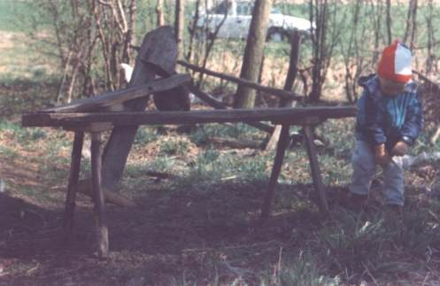
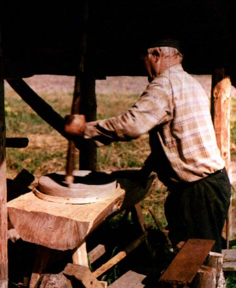
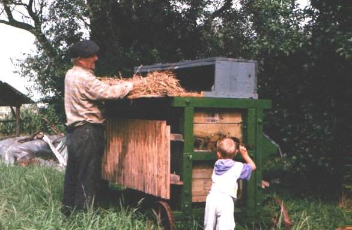
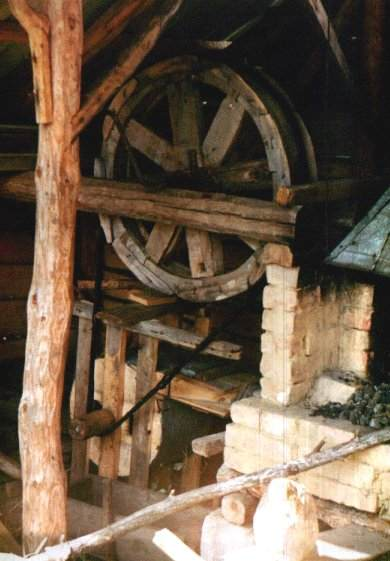

Maszyny, które odcodzą w zapomnienie
Maszyny, narzędzia też już odchodzą w zapomnienie ...
Narzędzia tutaj przedstawione jeszcze działają.
Kobylica

Kobylica - przyrząd gospodarski służący do przytrzymywania kawałka drewna, pomagające w jego
obróbce. Na kobylicy zasiadało się okrakiem. Drewno było blokowane głową kobylicy i trzymane nogą. W ten
sposób obie ręce były wolne dla obróbki drewna.
Zdjęcie wykonano na wiosnę 1999 w zagrodzie Franciszka Prygi. Autor:M.Wnuk.
Żarna

Żarna - tak kiedyś mleło się ziarno na mąke. Żarna składają się z dwóch okrągłych i płaskich
kamieni. Kamienie leżą płasko jeden na drugim. Górny kamień obrasa się, a w jego otwór wsypuje się
ziarno. Ziarno dostają się pomiędzy dwa kamienie i ulega zmieleniu.
Zdjęcie wykonano na wiosnę 1999 w zagrodzie Franciszka Prygi. Autor:M.Wnuk.
Młocarnia polowa

Młocarnia tzw. sztyftówka była używana do młocenia w zboża w polu.
Napędzana była esiokiem, czyli silnikem spalinowym.
Zdjęcie wykonano na wiosnę 1999 w zagrodzie Franciszka Prygi na Pańskich Polach. Autor:M.Wnuk
Piec kowalski

Piec kowalski wraz z miechem zbudowany przez Franciszka Prygę. Miech jest napędzany nogą.
Zdjęcie wykonano na wiosnę 1999 w zagrodzie Franciszka Prygi. Autor:M.Wnuk.